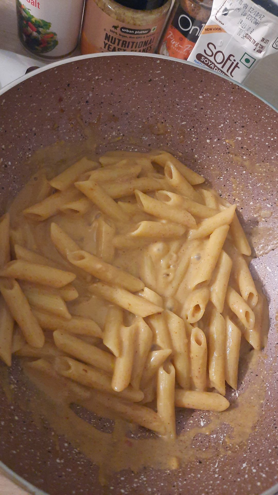

One Pot Vegan Pasta
Home

Description
Easy to make, customizable, mess free, one pot vegan pasta.
This was my favorite thing to make in hostel until my induction was taken away and this was my
inspiration.
I have modified it for my taste preference and ingredients available to me.
Ingredients
- 1 cup uncooked Pasta (Macaroni, Penne, Fettucini, any kind works)
- 4 Garlic Cloves (adjust to your liking)
- 1 tbsp Oil
- 1 cup Soya Milk (This is the easiest to find in stores in India, homemade Cashew Milk tastes the best in
pasta
- 2 tbsp Nutritional Yeast
- Seasonings: Salt, Turmeric, Red Chilli Powder/Flakes, Ground Black Pepper, Smoked Paprika, Peri-Peri (Start
with less amount and adjust as needed)
Steps
- Add crushed or finely chopped garlic cloves to a pan on medium heat with oil.
- To the pan, add a pinch of turmeric and salt and saute for about a minute (salt speeds up cooking).
- Add the pasta in the pan and coat it in oil then add 2 cups of water.
- Stir in the rest of the seasoning and increase the flame to bring it to a boil.
- Once the pasta is to the texture of your liking and the water has reduced, add in the milk and stir
- Taste and adjust to your liking and it is ready to serve! It tasted great with some tofu crumbles on top.